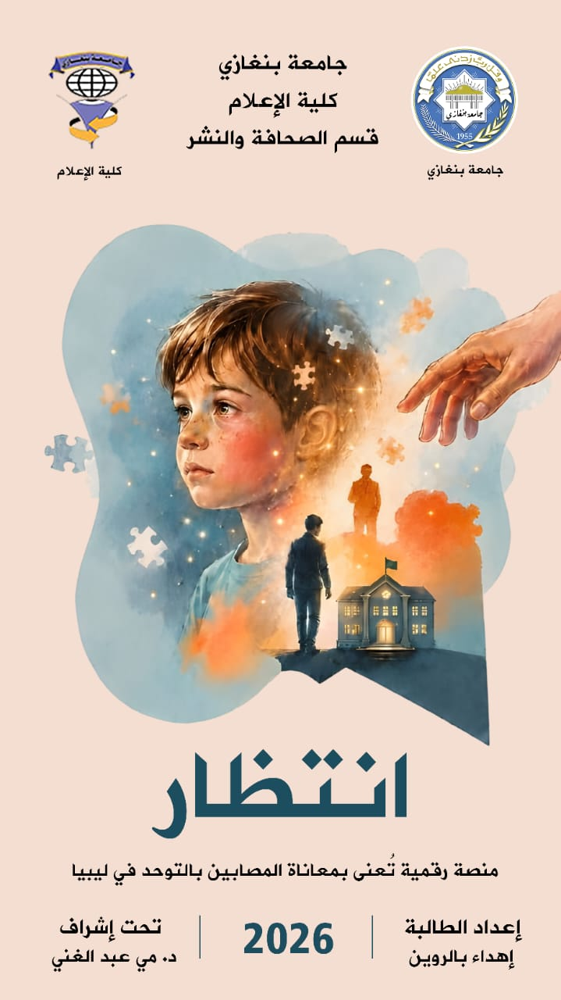

مدونة صحفية تُعنى بواقع المصابين بالتوحد في ليبيا، بين معاناة الأهالي، غياب الإحصائيات، وقصص أمل تستحق أن تُروى.

منصة "انتظار" مشروع تخرج بقسم الصحافة والنشر — كلية الإعلام، جامعة بنغازي، يجمع بين التوثيق الصحفي والسرد الإنساني لتقديم صورة شاملة عن واقع التوحد في ليبيا.
ستة أبواب صحفية، كل باب يقارب التوحد من زاوية مختلفة
مستجدات علمية وبرامج محلية، من اكتشافات العلاج إلى تطوير كوادر مركز بنغازي للتوحد.
من أهمية الكشف المبكر إلى قصة أخت شاب توحدي، بأسلوب تحليلي وسردي إنساني.
الانتهاكات داخل المراكز، غياب الإحصائيات والرقابة، وضعف الحماية القانونية.
مبادرة مؤسسة خليفة الدولية ودورها في دعم الأسر عبر برامج إنسانية.
تصحيح المفاهيم الخاطئة، أنواع ودرجات التوحد، وعوامل دقة الإحصائيات في ليبيا.
قصص ملهمة لنجاحات رغم الإصابة، وتوثيق لحالات غياب لم تعد إلى بيوتها.
اضغط على أي قسم بالأعلى لعرض مواده فقط